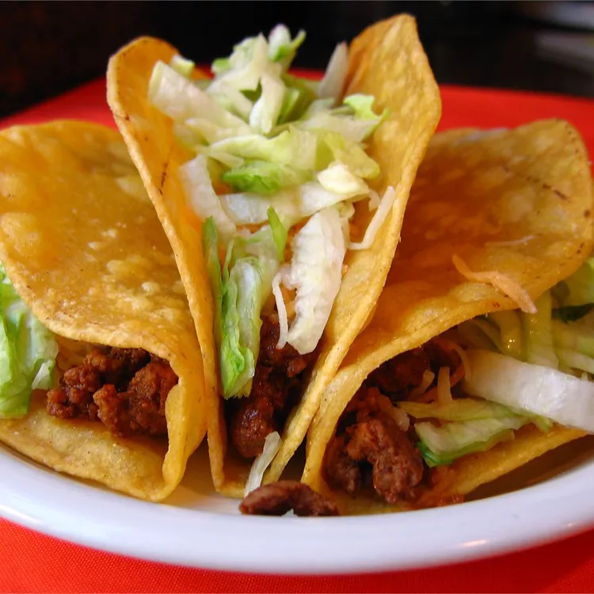

Hard Shell Tacos

Description
Delicious homemade tacos that can be made at a moments notice.
Ingredients
- 12 cups vegetable oil for frying
- 1 (12 ounce) package corn tortillas
- salt to taste
Steps
- Fill a heavy skillet with 1-inch-deep oil over medium heat; heat to 365 degrees F (180 degrees C).
- Fry one tortilla at a time in hot oil. Cook for about 15 seconds. Flip over and fold in half, holding in place with tongs until crispy, about 15 seconds. Drain on paper towels. Sprinkle with salt while still hot.
Back